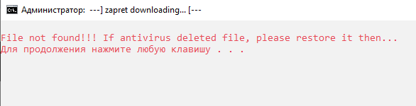
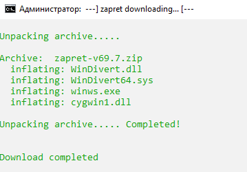
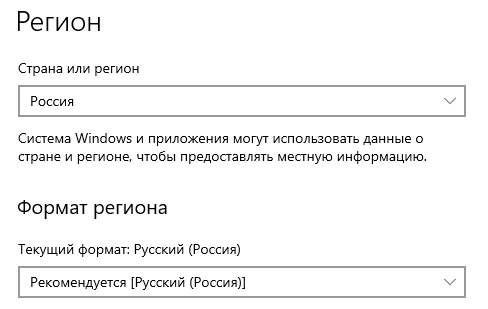

я живу в крыму и у меня не работает ютуб с GoodbyeDPI сам я хз что делать может кто подскажет?
Попробовать аналог Сборка YTDisBystro на основе zapret для Windows: Обсуждение - #522 by KDS
типо там нужно скачать потом запустить и всё?
Скачать,распаковать,если виндовс 10 ,то сначала запустить !!!get_zapret_first!!!.cmd
скачаются 4 файла с гитхаба и потом уже запустить 1_preset_russia.cmd
Если раньше гудбай был, то надо в папке с гудбаем от админа запустить service_remove.cmd
и перезагрузить комп.
а у меня сейчас гудбай есть, его надо удалить?
а можешь пожалуйста сказать как найти эти 4 файла?
они скачаются в распакованную папку winws.exe,cygwin1.dll,WinDivert.dll,WinDivert64.sys
а их отдельно скачивать надо?
зайти в распакованную папку YTDisBystro и запустить файл !!!get_zapret_first!!!.cmd и эти файлы в эту же папку сами скачаются.
Можно скачать zip-архив с гитхаба и положить его в папку YTDisBystro и потом запустить !!!get_zapret_first!!!.cmd
эта программа !!!get_zapret_first!!! у меня закрылась после того что я нажал на любую клавишу что бы продолжить
Так файлы то скачались или нет
достал попкорн
{kind=link}
эти?
это файл для скачивания 4 файлов winws.exe,cygwin1.dll,WinDivert.dll,WinDivert64.sys

это? или надо посмотреть где то в другом месте?
И что тут написано?
Видимо антивирус файлы сожрал
Видимо, так и есть. После скачивания файла идет переход к распаковке этих 4-х файлов из архива, а архива то уже и нет
Лечится банальным добавлением папки в исключения антивируса или восстановлением архива из карантина и нажатием любой кнопки, как и написано. И это точно не Защитник, он ничего не удаляет
а что делать?
Выше написал. После распаковки архив удаляется и уже не нужен. На что там ваш “антивирус” реагирует - мне неведомо
как посмотреть на что он реагирует, в какие папки смотреть?
В антивирусе и смотрите - там есть список детектов. Там же можно файл разрешить и восстановить, там же папку в исключения добавить
А лучше его вообще вырубите на время скачивания/распаковки да и все - это проще
Что за антивирус то такой злобный? )) Для статистики, чем не надо пользоваться
Все, потеряли бойца, походу… Антивирь оставил его без ютуба )
я не знаю но я не могу найти антивирус походу у меня его просто нету
А если так скачать файл тоже исчезает?
скачал что дальше?
Перенесите его в папку YTDisBystro и запустите гет_запрет-фёст
Херня какя-то, вы хоть папку то из архива распаковали или так и запускаете из архива прямо?

это всё или ещё нужны какие то махинации для работы?
Нет, теперь запускайте 1_пресет_раша и проверяйте ютуб. И инструкцию в шапке темы по ссылке во 2-м посте прочтите, чтобы не было лишних вопросов
стоп он показывает 59 секунд потом загрузка
Не за что, если проблема 59-й секунды не дай бог вылезет - там же в теме есть решение, воспользуйтесь поиском по теме
А ну вот и она )))
тема там где я скачивал YTDisBystro?
Да в ней, сейчас я вам найду ссылку прямую на решение
Вот
Там все описано что и как делать и настраивать/прописывать
спасибо

а менять формат региона или сам регион?
Сам регион. И потом желательно браузер перезапустить и проверить в настройках CT что ползунок выключен и проксируемый сайт на месте
а в каком смысле отключить ползунок?
{kind=link}
И да, сайт после Сохранения изменений в списке проксируемых сократится до просто googleapis.com - это нормально
а это где? тоже в шестерёнке?
facepalm
Ну, настройки Регион где?
{kind=link}
так у меня ни где нету
Шестерёнка не в виндовсе ,а в расширении для браузера Censor Tracker,которое надо установить
Да в Censor Tracker регион, при чем тут настройки винды? )))
То-то я смотрю список какой-то не такой и там совсем не то, что должно быть. Думал, может расширение опять обновили 
аааа теперь понятно, спасибо
а что дальше? там про какой то домен и про сайт из реестера, я не разбираюсь в этих терминах
Дальше идете в список проксируемых сайтов и туда вставляете то, что написано в инструкции jnn-pa… и сохраняете изменения
И да, сайт после Сохранения изменений в списке проксируемых сократится до просто googleapis.com - это нормально
И потом желательно браузер перезапустить и проверить в настройках CT что ползунок выключен и проксируемый сайт на месте
Если все на месте, потом уже лезем на ютуб
а мне вот так написать в списке прокси. сайтов: https://www.youtube.com/ ?
Какой, нах… ютуб, если в инструкции черным по белому написано jnn-pa.googleapis.com ?
Вы издеваетесь или что?
простите я в этом ничего не разбираюсь, то есть мне просто написать там jnn-pa.googleapis.com или мне подставить что то другое вместо googleapis или jnn-pa?
Извиняюсь, вспылил…
Скопируйте jnn-pa.googleapis.com и просто вставте там в поле.
Потом нажмите снизу кнопку Сохранить изменения.
ничего страшного это я просто не понимаю, и после закрыть браузер потом открыть снова и проверить всё ли сохранилось?
Да
всё сохранилось, теперь можно смотреть ютуб нормально?
Проверьте, если теперь дальше 59-ти секунд будет грузиться - то все нормально
И стримы проверьте, не будет ли там каких затыков
видео теперь нормально работает
стримы работают нормально
спасибо большое всем за решение проблемы
Пожалуйста. И на будущее - не надо создавать темы при наличии уже пятка таких же. Ищите и все найдется